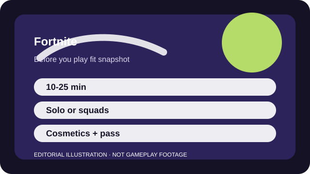

BEFORE YOU PLAY
What this page is and is not
This is a sourced editorial fit profile. It is designed to help with a yes-or-no play decision, and it does not claim a scored hands-on review.
The first question is not whether Fortnite is universally good. It is whether you want an all-purpose game space that changes constantly. Starting in Zero Build and ignoring side modes for a few sessions makes the fit clearer much faster.
The first-session loop to judge is simple: Drop in, gather weapons, survive the storm, and decide when to fight, rotate, or disengage.
Season quests and battle-pass goals create short-term direction, yet the reward track resets with each season.

FIT SNAPSHOT
Fortnite at a glance
| Genre | Battle royale / creator platform |
|---|---|
| Platforms | PC, PlayStation, Xbox, Switch, Supported mobile options |
| Business model | Free-to-play live service with cosmetic spending and battle passes. |
| Typical session | 10-25 minute matches, plus extra creator-mode time if you want it. |
| Play style | social squad shooter |
| Learning barrier | Zero Build is approachable quickly, but the broader Fortnite ecosystem can still feel noisy and fast-changing. |
| Social shape | Fortnite works solo, but its flexibility and event cadence land better when you have a duo or squad to return with. |
WHO IT FITS
Best fit, likely friction, and the social reality
friends who want one free game that can flip between battle royale, social events, and creator-made modes
players who want a quiet interface, a fixed meta, or a very serious one-mode shooter
Fortnite works solo, but its flexibility and event cadence land better when you have a duo or squad to return with.
Season quests and battle-pass goals create short-term direction, yet the reward track resets with each season.
FIRST SESSION PLAN
How to test the fit in one evening
- Start in Zero Build before deciding whether the wider Fortnite ecosystem is for you.
- Check cross-play, subtitle, visual-audio, and input settings before the second match.
- Use one reliable drop route for several games instead of sampling the whole island at once.
- Ignore creator islands and the store until the basic loop of looting, rotating, and surviving feels fun.
Use the first session to answer these fit questions instead of judging rank, win rate, or store value immediately.
- Do you want one launcher that can double as a recurring social hangout?
- Will constant seasonal events feel energizing or exhausting after a month?
- Can you enjoy the game without treating every cosmetic or quest as mandatory?
TIME, COST, AND COMMITMENT
What you are really signing up for
| Session budget | 10-25 minute matches, plus extra creator-mode time if you want it. |
|---|---|
| Social demand | Fortnite works solo, but its flexibility and event cadence land better when you have a duo or squad to return with. |
| Progression shape | Season quests and battle-pass goals create short-term direction, yet the reward track resets with each season. |
| Spending pressure | Core play is free. Spending is mostly cosmetic, but the shop and pass structure reward people who check in often. |
You can keep Fortnite casual, but the seasonal reward structure works best for people who are comfortable letting some limited-time cosmetics pass by.
Core play is free. Spending is mostly cosmetic, but the shop and pass structure reward people who check in often.
SOURCES AND LIMITS
What was checked, and what can change
- Seasonal loot pools and limited-time playlists move regularly.
- Collaboration events and quest structures can reshape what the game foregrounds.
- Supported mobile or cloud access options can vary by store or region.
This profile uses official game pages and defensible general product knowledge to frame the player fit. It does not claim live testing across every platform, accessibility need, or current event rotation.